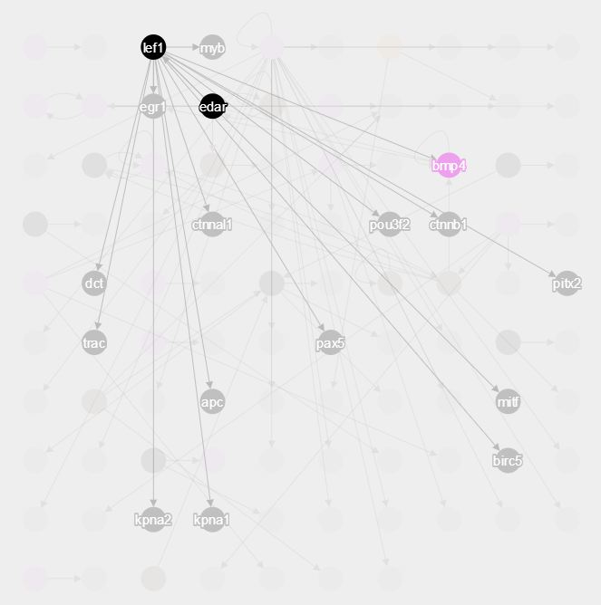

Pheno2GRN allows users to create gene regulatory networks from interaction queries and reverse engineered networks. Many advanced options are availible to the user for customizability. A useful reporting section is also availible.
Users are not forced into selecting from the list. Phenotype keyword containing the text in the "Phenotype" text field will be searched for. For example, if a user types "cns interneuron" and clicks "Submit", the keyword search will return genes from both the "CNS interneuron" and "CNS interneuron of spinal cord" phenotype keywords.
Users are allowed to skip the phenotype to gene step by uploading a list of their own genes or submitting a space-separated list of genes after clicking on the (Advanced Options)
The genes obtained from the phenotype query, or user uploaded are submitted to 31 molecular interaction databases in a PSICQUIC stadardized query (more information on PSICCQUIC can be found here). The queries are submitted in parallel to all 31 databases to ensure that data is displayed comes from multiple resources.
The interaction network is visualized using the javascript library Cytoscape.js. The Cytoscape library allows for the coloration of genes which are directly linked to phenotypes or user-supplied genes. Users can also double click on a node to hide all unrealated nodes. The library also alows users to move nodes and zoom in and out.
The gene intersection Venn Diagram allows users to determine which genes are found in multiple phenotypes or multiple uploaded gene lists. to show a venn diagram image:
The Gene List tab allows users to select which genes they would like to work with. Gene results from the phenotype to gene queries can be found here. Users select the genes by moving genes from the "Availible Genes" list to the "Genes in Use" list. After moving desired genes to the "Genes in Use" list, click the "Run For Selected Genes" button to rerun the PSICQUIC queries and network visualization for the genes in the "Genes in Use" list.
To get the homologues for some selected genes, navigate to the "Gene Selection" tab.
Pheno2GRN allows users to combine reverse engineered gene networks with ones derived from literature. Users have the option of uploading their own .dot file or using Pheno2GRN's reverse engineering capabilities. Pheno2GRN leverages a high performance computing environment called iPlant and a microarray reverse engineering application know as GRNInfer.
The PSICQUIC result tab allows users to paginate through PSICQUIC results and select which results they would like to appear in the Cytoscape interaction visulizations. All interactions are displayed in default. To change which interactions appear, select desired interactions and click the "Re-Genenerate Display" button.
The reporting section allows users to download both individual step data and a complete overall report. As a user completes steps in the workflow, rows are added or updated in the reporting table. To download individual step data, simply click the the button in the "Associated Files" column (this button will not be present, if there is no file to download). The label column allows users to label steps for the overall report. Users can also upload Cytoscape visualization screen shots for the overall report. Clicking the "Generate Complete Report" button will create and download the overall report in a Microsoft docx format.